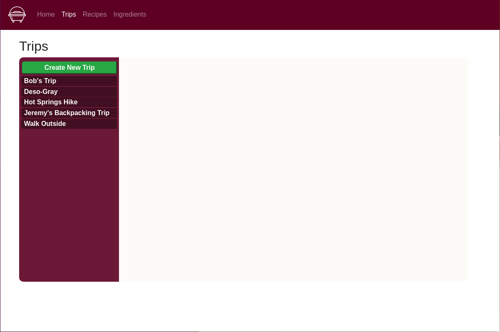
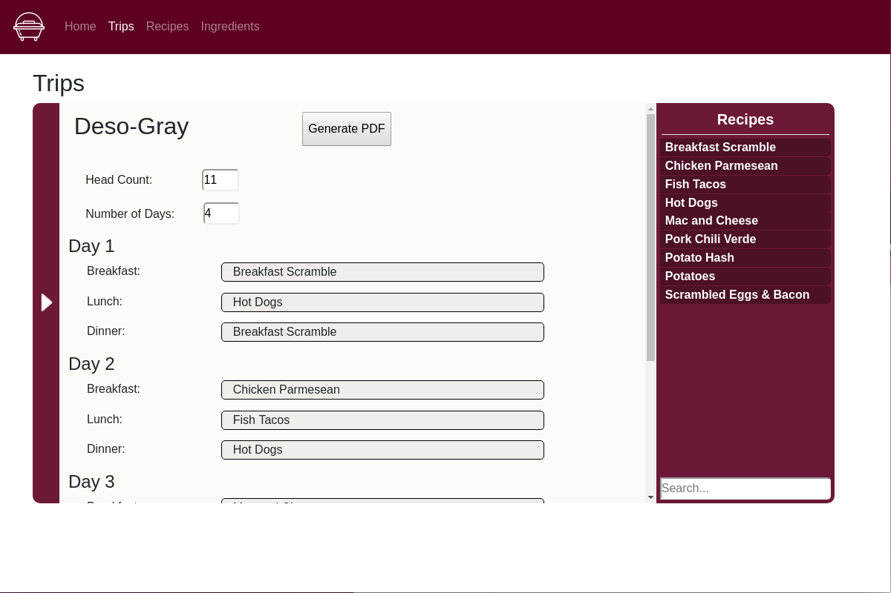
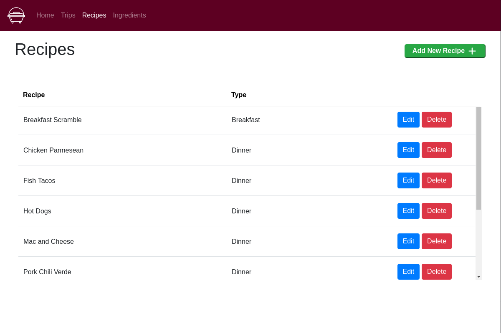
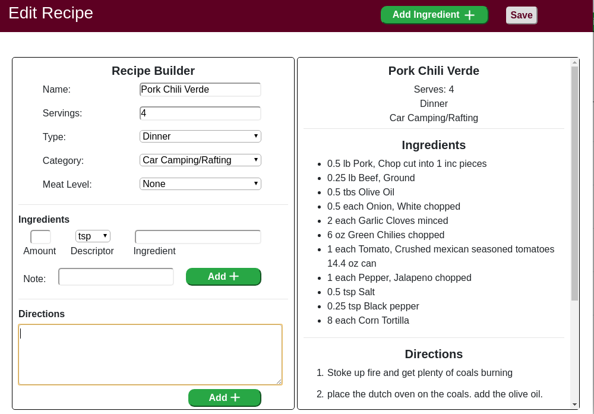
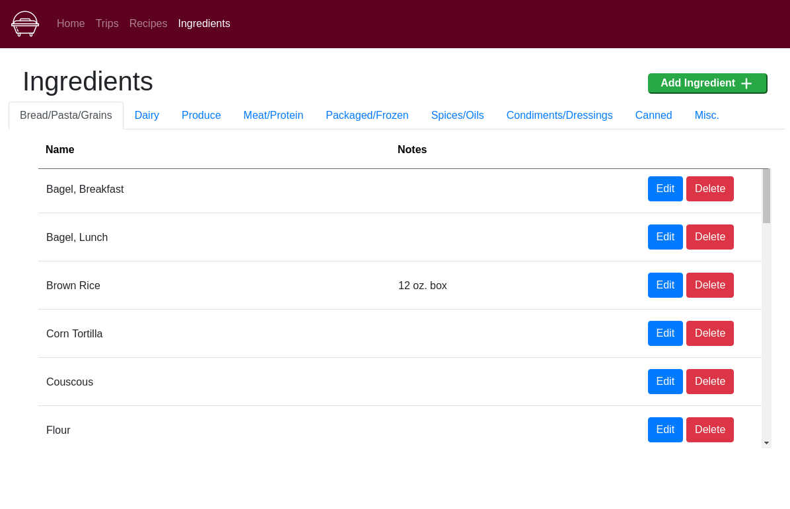

Welcome To Your Expedition Menu!
Here's a quick walkthrough of how to use your Expedition Menu.
This bar at the top will help you navigate through your Expedition Menu. The white text is the tab you are currently
browsing.

This page displays all the information for creating or editing trips. Click the "Create New Trip" button to start
a new trip, or just click an existing trip to edit. Also, delete a trip by hovering over it and clicking on the
X.

After clicking on add a trip or editing a trip, this is the page you will see. Adjust the head count and number
of days accordingly and drag the meals to each slot you want them in. When you're done, click the arrow on the
left to submit your changes. The Generate PDF button will generate a shopping list, along with all of the recipes
and a trip itenerary.

This page displays a list of all your currently entered Recipes. The "Add New Recipe" button will open the add
recipe window. The "Edit" button works similarly. The "Delete" button will peremenantly delete the recipe from
all databases.

This page displays after clicking the "Add" or "Edit" buttons on the recipe page. Here, you can set or adjust the
name, servings, type, ingredients and directions for a recipe, along with other specifics. You can delete an
ingredient by double-clicking it. Likewise, you may edit a direction by doing the same. The "Save" button submits
your changes.

This page displays all of the ingredients currently stored in your database. The add, edit and delete buttons do
what you may expect them to.
Thank you for using the Expedition Menu!
For any maintenance or assistance on this product please contact Team CRAM at any of the following emails:
Cameron Crow: crowcameron4@gmail.com
Richard Sterling: richard.sterling.319@gmail.com
Austin Zanoni: austinzanoni21@gmail.com
Matt Rutter: mattjrutter1@gmail.com